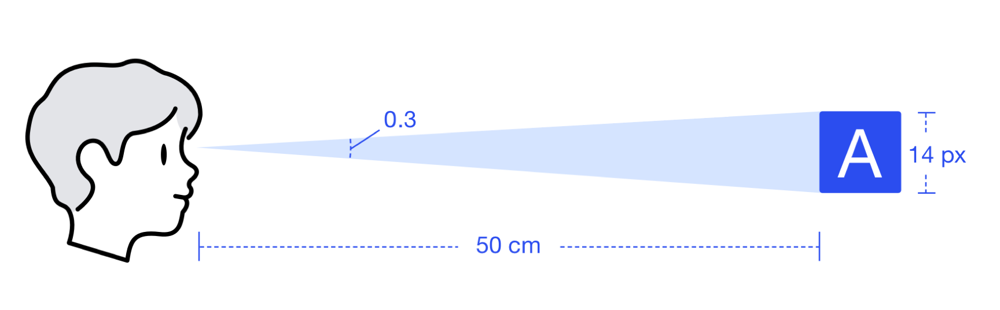
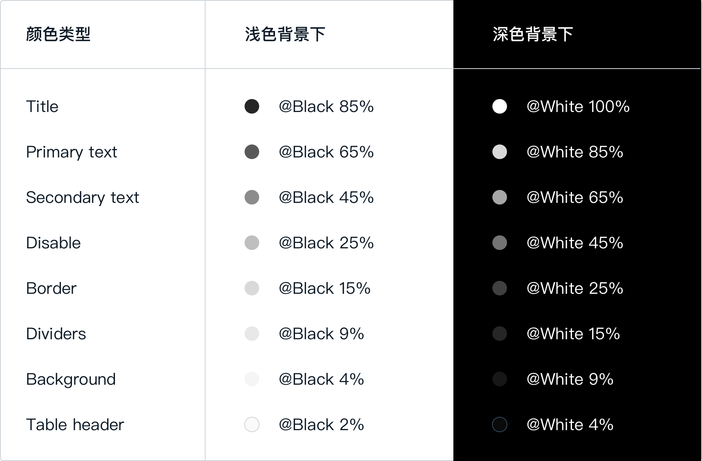

<!DOCTYPE HTML>
<html lang="" >
    <head>
        <meta charset="UTF-8">
        <meta content="text/html; charset=utf-8" http-equiv="Content-Type">
        <title>Typography 字体与排版 · GitBook</title>
        <meta http-equiv="X-UA-Compatible" content="IE=edge" />
        <meta name="description" content="">
        <meta name="generator" content="GitBook 3.2.3">
        
        
        
    
    <link rel="stylesheet" href="../gitbook/style.css">

    
            
                
                <link rel="stylesheet" href="../gitbook/gitbook-plugin-highlight/website.css">
                
            
                
                <link rel="stylesheet" href="../gitbook/gitbook-plugin-search/search.css">
                
            
                
                <link rel="stylesheet" href="../gitbook/gitbook-plugin-fontsettings/website.css">
                
            
        

    

    
        
    
        
    
        
    
        
    
        
    
        
    

        
    
    
    <meta name="HandheldFriendly" content="true"/>
    <meta name="viewport" content="width=device-width, initial-scale=1, user-scalable=no">
    <meta name="apple-mobile-web-app-capable" content="yes">
    <meta name="apple-mobile-web-app-status-bar-style" content="black">
    <link rel="apple-touch-icon-precomposed" sizes="152x152" href="../gitbook/images/apple-touch-icon-precomposed-152.png">
    <link rel="shortcut icon" href="../gitbook/images/favicon.ico" type="image/x-icon">

    
    <link rel="next" href="icon.html" />
    
    
    <link rel="prev" href="color.html" />
    

    </head>
    <body>
        
<div class="book">
    <div class="book-summary">
        
            
<div id="book-search-input" role="search">
    <input type="text" placeholder="Type to search" />
</div>

            
                <nav role="navigation">
                


<ul class="summary">
    
    

    

    
        
        
    
        <li class="chapter " data-level="1.1" data-path="../">
            
                <a href="../">
            
                    
                    Introduction 介绍
            
                </a>
            

            
        </li>
    
        <li class="chapter " data-level="1.2" data-path="./">
            
                <a href="./">
            
                    
                    Foundation 基础
            
                </a>
            

            
            <ul class="articles">
                
    
        <li class="chapter " data-level="1.2.1" data-path="color.html">
            
                <a href="color.html">
            
                    
                    Color 色彩
            
                </a>
            

            
        </li>
    
        <li class="chapter active" data-level="1.2.2" data-path="typography.html">
            
                <a href="typography.html">
            
                    
                    Typography 字体与排版
            
                </a>
            

            
        </li>
    
        <li class="chapter " data-level="1.2.3" data-path="icon.html">
            
                <a href="icon.html">
            
                    
                    Icon 图标
            
                </a>
            

            
        </li>
    
        <li class="chapter " data-level="1.2.4" data-path="shape.html">
            
                <a href="shape.html">
            
                    
                    Shape 形状
            
                </a>
            

            
        </li>
    
        <li class="chapter " data-level="1.2.5" data-path="layout.html">
            
                <a href="layout.html">
            
                    
                    Layout 布局
            
                </a>
            

            
        </li>
    
        <li class="chapter " data-level="1.2.6" data-path="navigation.html">
            
                <a href="navigation.html">
            
                    
                    Navigation 导航
            
                </a>
            

            
        </li>
    
        <li class="chapter " data-level="1.2.7" data-path="layer.html">
            
                <a href="layer.html">
            
                    
                    Layer 图层
            
                </a>
            

            
        </li>
    
        <li class="chapter " data-level="1.2.8" data-path="interaction.html">
            
                <a href="interaction.html">
            
                    
                    Interaction 交互
            
                </a>
            

            
        </li>
    
        <li class="chapter " data-level="1.2.9" data-path="motion.html">
            
                <a href="motion.html">
            
                    
                    Motion 动效
            
                </a>
            

            
        </li>
    
        <li class="chapter " data-level="1.2.10" data-path="communication.html">
            
                <a href="communication.html">
            
                    
                    Communication 沟通
            
                </a>
            

            
        </li>
    

            </ul>
            
        </li>
    

    

    <li class="divider"></li>

    <li>
        <a href="https://www.gitbook.com" target="blank" class="gitbook-link">
            Published with GitBook
        </a>
    </li>
</ul>


                </nav>
            
        
    </div>

    <div class="book-body">
        
            <div class="body-inner">
                
                    

<div class="book-header" role="navigation">
    

    <!-- Title -->
    <h1>
        <i class="fa fa-circle-o-notch fa-spin"></i>
        <a href=".." >Typography 字体与排版</a>
    </h1>
</div>


                    <div class="page-wrapper" tabindex="-1" role="main">
                        <div class="page-inner">
                            
<div id="book-search-results">
    <div class="search-noresults">
    
                                <section class="normal markdown-section">
                                
                                <p>&#x539F;&#x89C4;&#x8303;&#xFF1A;<a href="http://one-design.baidu-int.com/design/basic/typography" target="_blank">http://one-design.baidu-int.com/design/basic/typography</a></p>
<h1 id="&#x4E3B;&#x5B57;&#x4F53;&#xFF08;&#x65B0;&#x589E;&#xFF09;">&#x4E3B;&#x5B57;&#x4F53;&#xFF08;&#x65B0;&#x589E;&#xFF09;</h1>
<p>&#x6211;&#x4EEC;&#x57FA;&#x4E8E;&#x7535;&#x8111;&#x663E;&#x793A;&#x5668;&#x9605;&#x8BFB;&#x8DDD;&#x79BB;&#xFF08;50 cm&#xFF09;&#x4EE5;&#x53CA;&#x6700;&#x4F73;&#x9605;&#x8BFB;&#x89D2;&#x5EA6;&#xFF08;0.3&#xFF09;&#x5BF9; Ant Design &#x7684;&#x4E3B;&#x5B57;&#x4F53;&#x8FDB;&#x884C;&#x4E86;&#x4E00;&#x6B21;&#x5347;&#x7EA7;&#xFF0C;&#x4ECE;&#x539F;&#x5148;&#x7684; 12 &#x4E0A;&#x5347;&#x81F3; 14&#xFF0C;&#x4EE5;&#x4FDD;&#x8BC1;&#x5728;&#x591A;&#x6570;&#x5E38;&#x7528;&#x663E;&#x793A;&#x5668;&#x4E0A;&#x7684;&#x7528;&#x6237;&#x9605;&#x8BFB;&#x6548;&#x7387;&#x6700;&#x4F73;&#x3002;</p>
<p></p>
<blockquote>
<p>&#x53C2;&#x8003; <a href="https://ant.design/docs/spec/font-cn#%E4%B8%BB%E5%AD%97%E4%BD%93" target="_blank">Ant Design - &#x4E3B;&#x5B57;&#x4F53;</a></p>
</blockquote>
<h1 id="&#x5B57;&#x4F53;&#x989C;&#x8272;&#xFF08;&#x65B0;&#x589E;&#xFF09;">&#x5B57;&#x4F53;&#x989C;&#x8272;&#xFF08;&#x65B0;&#x589E;&#xFF09;</h1>
<p>&#x6587;&#x672C;&#x989C;&#x8272;&#x5982;&#x679C;&#x548C;&#x80CC;&#x666F;&#x989C;&#x8272;&#x592A;&#x63A5;&#x8FD1;&#x5C31;&#x4F1A;&#x96BE;&#x4EE5;&#x9605;&#x8BFB;&#x3002;&#x8003;&#x8651;&#x5230;&#x65E0;&#x969C;&#x788D;&#x8BBE;&#x8BA1;&#x7684;&#x9700;&#x6C42;&#xFF0C;&#x6211;&#x4EEC;&#x53C2;&#x8003;&#x4E86; WCAG &#x7684;&#x6807;&#x51C6;&#xFF0C;&#x5C06;&#x6B63;&#x6587;&#x6587;&#x672C;&#x3001;&#x6807;&#x9898;&#x548C;&#x80CC;&#x666F;&#x8272;&#x4E4B;&#x95F4;&#x4FDD;&#x6301;&#x5728;&#x4E86; 7:1 &#x4EE5;&#x4E0A;&#x7684; AAA &#x7EA7;&#x5BF9;&#x6BD4;&#x5EA6;&#x3002;</p>
<p></p>
<blockquote>
<p>&#x53C2;&#x8003; <a href="https://ant.design/docs/spec/font-cn#%E5%AD%97%E4%BD%93%E9%A2%9C%E8%89%B2" target="_blank">Ant Design - &#x5B57;&#x4F53;&#x989C;&#x8272;</a></p>
</blockquote>

                                
                                </section>
                            
    </div>
    <div class="search-results">
        <div class="has-results">
            
            <h1 class="search-results-title"><span class='search-results-count'></span> results matching "<span class='search-query'></span>"</h1>
            <ul class="search-results-list"></ul>
            
        </div>
        <div class="no-results">
            
            <h1 class="search-results-title">No results matching "<span class='search-query'></span>"</h1>
            
        </div>
    </div>
</div>

                        </div>
                    </div>
                
            </div>

            
                
                <a href="color.html" class="navigation navigation-prev " aria-label="Previous page: Color 色彩">
                    <i class="fa fa-angle-left"></i>
                </a>
                
                
                <a href="icon.html" class="navigation navigation-next " aria-label="Next page: Icon 图标">
                    <i class="fa fa-angle-right"></i>
                </a>
                
            
        
    </div>

    <script>
        var gitbook = gitbook || [];
        gitbook.push(function() {
            gitbook.page.hasChanged({"page":{"title":"Typography 字体与排版","level":"1.2.2","depth":2,"next":{"title":"Icon 图标","level":"1.2.3","depth":2,"path":"foundation/icon.md","ref":"foundation/icon.md","articles":[]},"previous":{"title":"Color 色彩","level":"1.2.1","depth":2,"path":"foundation/color.md","ref":"foundation/color.md","articles":[]},"dir":"ltr"},"config":{"gitbook":"*","theme":"default","variables":{},"plugins":[],"pluginsConfig":{"highlight":{},"search":{},"lunr":{"maxIndexSize":1000000,"ignoreSpecialCharacters":false},"sharing":{"facebook":true,"twitter":true,"google":false,"weibo":false,"instapaper":false,"vk":false,"all":["facebook","google","twitter","weibo","instapaper"]},"fontsettings":{"theme":"white","family":"sans","size":2},"theme-default":{"styles":{"website":"styles/website.css","pdf":"styles/pdf.css","epub":"styles/epub.css","mobi":"styles/mobi.css","ebook":"styles/ebook.css","print":"styles/print.css"},"showLevel":false}},"structure":{"langs":"LANGS.md","readme":"README.md","glossary":"GLOSSARY.md","summary":"SUMMARY.md"},"pdf":{"pageNumbers":true,"fontSize":12,"fontFamily":"Arial","paperSize":"a4","chapterMark":"pagebreak","pageBreaksBefore":"/","margin":{"right":62,"left":62,"top":56,"bottom":56}},"styles":{"website":"styles/website.css","pdf":"styles/pdf.css","epub":"styles/epub.css","mobi":"styles/mobi.css","ebook":"styles/ebook.css","print":"styles/print.css"}},"file":{"path":"foundation/typography.md","mtime":"2019-02-22T09:35:18.241Z","type":"markdown"},"gitbook":{"version":"3.2.3","time":"2019-02-28T12:05:56.841Z"},"basePath":"..","book":{"language":""}});
        });
    </script>
</div>

        
    <script src="../gitbook/gitbook.js"></script>
    <script src="../gitbook/theme.js"></script>
    
        
        <script src="../gitbook/gitbook-plugin-search/search-engine.js"></script>
        
    
        
        <script src="../gitbook/gitbook-plugin-search/search.js"></script>
        
    
        
        <script src="../gitbook/gitbook-plugin-lunr/lunr.min.js"></script>
        
    
        
        <script src="../gitbook/gitbook-plugin-lunr/search-lunr.js"></script>
        
    
        
        <script src="../gitbook/gitbook-plugin-sharing/buttons.js"></script>
        
    
        
        <script src="../gitbook/gitbook-plugin-fontsettings/fontsettings.js"></script>
        
    

    </body>
</html>

